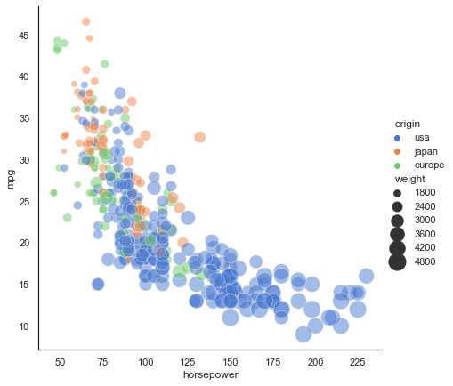

Day 20 Pre-class Assignment: Introduction to Data Visualization¶
✅ Your name here
¶Goals for Today’s Pre-Class Assignment¶
By the end of this assignment, you should be able to:
Understand the best practices of data visualization
Understand what types of graphs are available and when to use them
Understand how to choose the right data visualization tools
Understand how to interact critically with datasets
Assignment instructions¶
In today’s assignment we’ll be developing our ability to make effective plots. The most important lesson that we want you to come away with is:
Plots are visual stories. A good plot conveys a message that is both convincing and easy to understand.¶
1. Best Practices of Data Visualization¶
Broadly, a visualization is a visual representation of information. When it comes to data visualizations, Alberto Cairo defines them as “a display of data designed to enable analysis, exploration, and discovery. Data visualizations aren’t intended mainly to convey messages that are predefined by their designers. Instead, they are often conceived as tools that let people extract their own conclusions from the data (The Truthful Art: Data, Charts, and Maps for Communication pg. 31).” In this preclass, you will learn about the best practices when it comes to creating data visualizations and how to make effective visualizations.
What makes a good graph?¶
Edward Tufte talks about what goes into a good visualization in his book “The Visual Display of Quantitative Information”. Visualizations of graphical excellence share these qualities according to Tufte (pg.51):
Well-designed presentation of interesting data with substance, statistics, and design
Complex ideas are communicated with clarity, precision, and efficiency
Gives the viewer the greatest number of ideas in the shortest amount of time by using the least ink and space
Multivariate (show mulitple variables)
Telling the truth about the data
Let’s examine some visualizations to see if they fit these criteria.

This graph from Climate Central shows the deviation in average temperature from 1961 to 1990 due to climate change over the last 1000 years. It contains information from tree rings, ice cores, and historical records all shown in blue and thermometer readings in red. Tufte’s first criterion is a bit subjective, but I would say it’s very well-designed, the data is compelling, and the design choices are clear. The data is complex, but the meaning is clear. The sharp trend in red leads the reader to ask questions of the visualization. There are certainly multiple variables being plotted. I can’t say for certain if the visualization is telling the truth without deeper investigation into the creators of the visualization, but the Earth is certainly warming due to climate change. This visualization passes all of Tufte’s criteria for graphical excellence.

This graph is courtesy of the subreddit r/dataisugly. The intention of this graph was to show the conditions at which exoplanets form. Let’s apply Tufte’s criteria once again. This graph is not well-designed. The data being shown is certainly complex, but it is not conveyed in a clear, precise, or efficient manner. The only ideas it gives the viewer are to close the tab and ask themselves how something like this could be created. It is overly-multivariate, trying to show at least six different variables. As an astronomer, I can vouch that it’s telling the truth, but not in a clear fashion. Please don’t make graphs like this.
How to avoid making graphs like the one above¶
Tufte provides some guidelines on graphical integrity: how to make accurate, truthful, and efficient visualizations (pg. 77):
The representation of numbers should be directly proportional to the numerical quantities represented (scaling by the area of shapes can be accidentally misleading if done incorrectly).
Clear, detailed, and thorough labeling should be used to defeat distortion and ambiguity.
Write out explanations of the data on the graph itself.
Label important events in the data.
In time-series graphs of money, use standard units and account for inflation
The number of dimensions represented should not exceed the number of dimensions in the data
Do not quote data out of context.
A note on ethics¶
Some of these guidelines seek to instruct in how to make good visualizations, but others go into the ethics of data visualization. Data visualizations are a powerful tool to make arguments and sway opinions, and it is very easy to mislead others, either accidentally or purposefully, with the design choices you make. Cairo states, “If someone hides data from you, it’s probably because he has something to hide (pg. 47).” Make sure your design choices in your graphics don’t accidentally mislead the viewers by saying something you didn’t intend.
2. Choosing the Right Tools for the Job¶
Now that you have a basic understanding of some of the best practices when it comes to data visualization, you’re probably wondering how to put these principles into practice. One important factor to consider is choosing the right type of graph for your data. Cairo has some good advice to get started (pg. 124-125):
Think about the task or tasks you want to enable, or the message that you wish to convey. Do you want to compare, to see change or flow, to reveal relationships or connections, to envision temporal or spatial patterns and trends? We could summarize this point with a sentance that sound tautological, but isn’t: plot what you need to plot. And if you don’t know what it is that you need to plot yet, plot many features of your data until the stories they may hide rise up.
Try different graphic forms. If you have more than one task on your wish list, you may need to represent your data in several ways.
Arrange the components of the graphic so as to make it as wasy as possible to extract meaning from it. Whenever it’s appropriate, add interactivity to your visualization so people can organize the data at will.
Test the outcomes yourself and with people who are representative of your audience - even if it is in a non-scientific, non-systematic manner.
With this in mind, let’s explore some of the many types of graphs.
✅ 2.1 Explore The Data Visualization Catalogue. Are there any types of graphs that stand out to you? Pick one and describe how it represents data. When would be a good time to use it?¶
Put your answer here
Practice with Statistical Graphs¶
While it’s good to know there’s other stuff out there, matplotlib is still a very useful tool to make nice-looking graphs. Let’s get some more practice with some of its capabilities. We’ll come back to these graphs in the in-class assignment later.
# imports
import numpy as np
import matplotlib.pyplot as plt
# First, let's generate some data to plot
N_points = # fill in the number of points to plot
n_bins = # fill in the number of bins
x = np.random.randn(N_points) # choosing values from a normal distribution
# Now, let's plot the histogram
plt.figure(figsize=[10,6])
plt.hist(x, bins=n_bins)
plt.xlabel('Value')
plt.ylabel('Frequency')
plt.title('A 1D Histogram')
✅ 2.2 Try changing the number of points and number of bins. What happens to the shape of the histogram?¶
# put your code here
✅ 2.3 Try to outline the bars in black and change the color of the bars themselves.¶
# put your code here
✅ 2.4 Add a black vertical line showing the mean value of the distribution.¶
# put your code here
3. Some Notes When Dealing with Datasets¶
Making nice visualizations out of your data is important, but the real focus is on the data itself. Not all datasets come in nicely wrapped packages; sometimes you need to put in a lot of work to get it into a format that can be visualized. Part of that formatting is understanding the data itself. Make sure to read the documentation/header/description when you download the data and understand what the creator meant by each column title; this might be different than what you interpret the titles to mean, and it can have significant effects on the results your visualizations show.
Once you understand the data, it’s time to get it in shape. There are three main categories to this process: binning, filtering, and smoothing.
Binning - This refers to grouping the data into different sections. An example could be grouping states by region (ie Midwest, Northeast, South, Central) if you had a data on the 50 states.
Filtering - This refers to creating subsets of data. A large dataset may include columns that isn’t of any use to the project you’re working on. In order to make it more manageable, it’s totally fine to get rid of it by filtering that portion out. pandas is a great tool for this kind of data manipulation.
Smoothing - This refers to getting rid of noise - statistical variance - in your data. Examples of this include calculating averages or fitting curves to show the behavior of certain variables.
✅ 3.1 When might you need to do this process? Give an example for each category.¶
Put your answer here.
4. Telling a Story with a Plot¶
At the beginning of this notebook, the plots tell a (visual) story. In this section, we’ll go through an example of determining a plot’s story. Below is a figure showing information about fuel efficiency.

✅ 4.1 Look at the figure and write down what information (or what story) the plot is telling you.¶
Here are some tips for things to look for:
General trendlines. What are the overall trends you see in the data?
Places with dramatic changes in the slope or departures from the “normal.”
(For data with multiple variables) Places where one of the variables does (or doesn’t) exist.
Write down what you think the story of this figure is.
🛑 STOP. MAKE SURE YOU COMPLETE THE ABOVE QUESTION BEFORE LOOKING AT THE NEXT PART.¶
Looking at this plot, there are a few things that you might have noticed.
SUV wasn’t a category in this dataset before 1999.
(Median) Fuel efficiency for trucks actually appears to have decreased in the mid/late 80s.
But the biggest thing to notice is that the fuel efficiency of all automobiles has been increasing since the late 2000s/early 2010s. The plot would suggest that there was some kind of change that occurred during this period.
✅ 4.2 Do you find this plot easy to read? Is it convincing?¶
Write down whether you think the plot is easy to read/convincing.
5. Introducing Seaborn¶
Seaborn is an excellent package for making more sophisticated plots. Seaborn has many built-in features, and many of the default parameters are set up in an aesthetically pleasing way.
Run the code in the cell below, which creates a figure using Seaborn.
import seaborn as sns
sns.set_theme(style="white")
mpg = sns.load_dataset("mpg")
sns.relplot(x="horsepower", y="mpg", hue="origin", size="weight",
sizes=(40, 400), alpha=.5, palette="muted",
height=6, data=mpg)
<seaborn.axisgrid.FacetGrid at 0x7fb45d3faf40>

✅ 5.1 What stands out to you? What do you think the story of this figure is?¶
Write down what you think the story being told in this plot?
✅ 5.2 Go through the Seaborn gallery and create one of the plots they present.¶
#Write your code for the Seaborn plot here
✅ 5.3 What do you think the story is for the plot you made?¶
Write down what you think the story being told in this plot?
6. Making your Figure for In-Class¶
For the upcoming in-class assignment, you will be working with your group to create the best plot possible (based on the measures discussed above).
✅ 6.1 Use materials from your semester project to create a plot. You can use either Seaborn or Matplotlib. You should put your plot in/on a slide, which you will present to your group.¶
#Write code for making your plot here
Assignment wrap-up¶
Please fill out the form that appears when you run the code below. You must completely fill this out in order to receive credit for the assignment!
from IPython.display import HTML
HTML(
"""
<iframe
src="https://cmse.msu.edu/cmse201-pc-survey"
width="800px"
height="600px"
frameborder="0"
marginheight="0"
marginwidth="0">
Loading...
</iframe>
"""
)
Sources¶
The Truthful Art: Data, Charts, and Maps for Communication by Alberto Cairo
The Visual Display of Quantitative Information by Edward Tufte
CMSE 402 assignments
Other links throughout the assignment
Copyright © 2021, Department of Computational Mathematics, Science and Engineering at Michigan State University, All rights reserved.